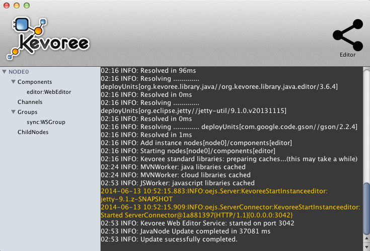

- Introduction
- 1. Distributed Models@Run.time
- 2. Getting started
- 3. Kevoree for the impatient
- 4. Making a component
- 5. Development Environment
- 6. Kevoree Script (aka KevScript)
- 7. Kevoree Cloud
- 8. Platform Integration
- Published using GitBook
Getting started
Kevoree and Models
Kevoree intensively relies on models, which are structured files in JSON or XMI format, used to carry the description of a component, an entire library, the location where the binary files can be found and/or the description of a software system to deploy with all the component instances and their connections.
The Kevoree Editor
The Kevoree Editor provides an authoring tool dedicated to Kevoree Models. It offers a Graphical Editor where Kevoree models can be intuitively designed using drag&drop mechanisms. It also embeds a Kevoree Scripting engine developed to simplify the modifications.
- Standalone Editor
- Web Editor
it is also embeded in Boot2Kevoree version
boot2kevoree editor
and in Kevoree GUI distribution (just right clic on top right, and it will magically deploy the editor and open it on your browser :-) )

Kevoree Distributions
Kevoree offers several runtime environments (JVM, JavaScript, Android, Arduino). In particular, the Java runtime wraps a Java Virtual Machine with all the necessary features to handle the deployment of models received from editors or local components.
- Use Kevoree for Cloud developement or without installing anything on your machine :
Donwload Boot2Kevoree client (requirement : virtualbox) and simply start a Kevoree mini cloud using boot2kevoree-cli start
Donwload Boot2Kevoree iso and use it in virtual box for instance.
- Use Kevoree for test purpose, go for Runtime GUI version :
- Use Kevoree for command line usage, go for standalone JAR version :
- Use Kevoree as a Service for production deployment, go for the DEB version (for Ubuntu like server, or Raspian OS) with watchdog :
Usage
All Kevoree Java applications can be started as follows:
java -jar kevoreeRuntime.jar (replace kevoreeRuntime by the right name of the file)
or simply by a double click.
To run boot2kevoree (virtualbox need to be installed http://www.virtualbox.org/), simply copy the file in your path then:
boot2kevoree init
This will download the .iso file and init the virtualmachine
boot2kevoree up
This will start the boot2kevoree virtual machine
boot2kevoree editor
will run the editor
boot2kevoree ssh
will log into the virtual machine (user:kevoree, password:tcuser)
boot2kevoree gui
will run the default Kevoree Cloud GUI, this will allow you to add/remove virtual machine